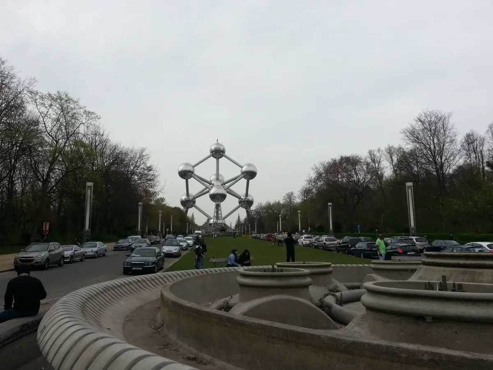
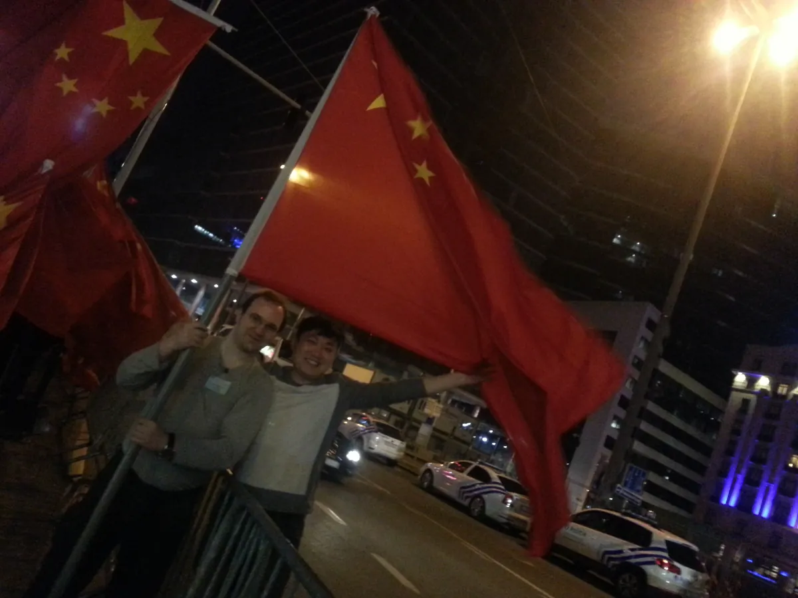
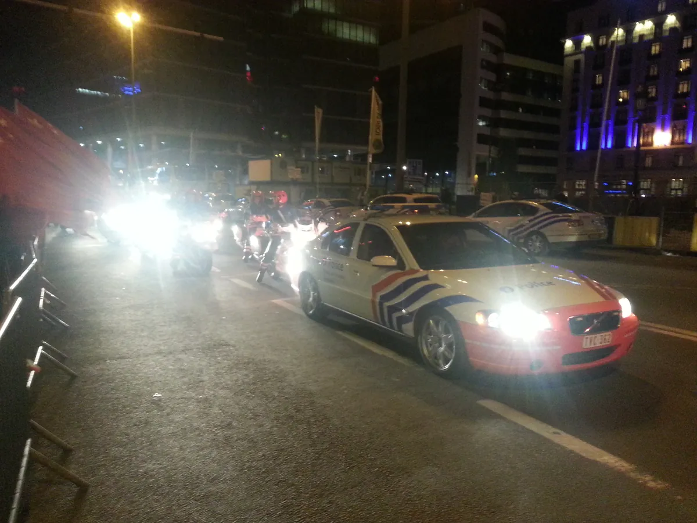
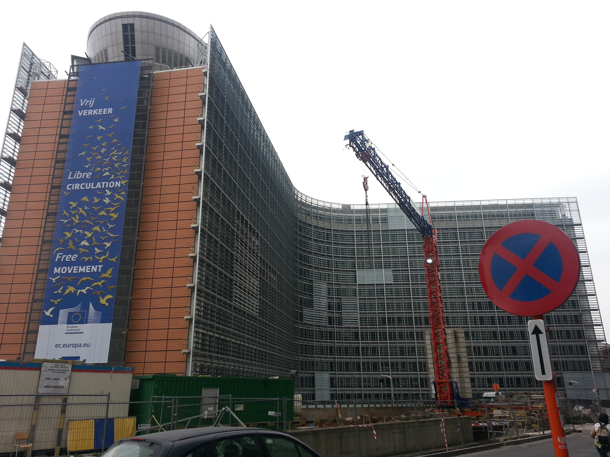
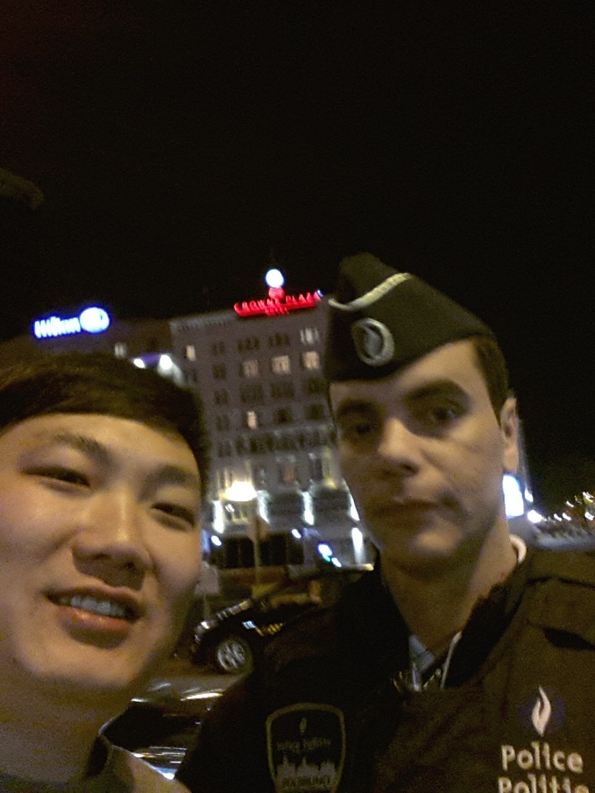

布鲁塞尔：一座总部比首都更多的城市
Brussels — a city with more headquarters than capital.

多年前去布鲁塞尔，印象最深的不是某一栋楼，而是这座城市身上那种奇怪的双重感——一边是中世纪的窄楼老巷，一边是全欧洲权力最密集的办公区。
广场：三层楼的欧洲
布鲁塞尔市区以中央大街为界，分成上城和下城。我在中央大街那栋楼前留了照片，往下走就是那个著名的广场——四周全是两三层高的老楼，窄窄地挤在一起，哥特式、文艺复兴式的立面混在一起，跟旁边的市政厅尖塔比起来，显得特别小巧。这就是布鲁塞尔大广场（Grand-Place），建于 12 世纪，1998 年被联合国教科文组织列为世界文化遗产，雨果当年称它是"世界上最美丽的广场"。
广场北面不远，就是那个几百年来一直在"营业"的尿尿小童（Manneken Pis）——半米高的铜像，传说是当年一个小男孩用尿浇灭了敌人的导火索，救了全城，这座城市就把这个传说立成了自己的城市符号，挺有意思的，一个欧洲政治中心，最出名的雕塑却是个恶作剧式的小孩。
至于巧克力和啤酒，是布鲁塞尔避不开的两件事——满街巧克力店，几乎每家餐厅都在卖精酿啤酒，这两样东西撑起了这座城市最"接地气"的那一面，跟它作为"欧洲首都"的严肃形象是两个极端。


欧盟总部：这座城市真正的身份
布鲁塞尔真正的分量，不在老城，在舒曼区（Schuman）那一片——欧盟委员会、欧洲理事会总部所在地。布鲁塞尔同时也是北约总部所在地。一座人口不到一百二十万的城市，却是欧盟和北约两个超国家 / 跨国组织的总部所在地，这也是它被叫作"欧洲首都"的真正原因——不是象征意义上的，是真的坐着实权机构。
（那个原子造型的不锈钢建筑——原子球塔，其实在城市另一头的海塞尔公园，是 1958 年布鲁塞尔世博会留下的地标，9 个直径 18 米的不锈钢球体，象征被放大 1650 亿倍的铁晶体结构。它和欧盟区不是同一个地方，但如果你那趟是一天内连着跑了两处，记忆里连在一起也很正常。）


工会文化：这座城市的另一种权力
在布鲁塞尔待的那几天，能明显感受到这个国家的工会不是摆设。比利时有三大工会联盟——比利时劳工总联盟（FGTB/ABVV），成立于 1898 年，偏左翼，行动风格强硬，目前会员超过 150 万；基督教工会联盟（CSC/ACV）成立于 1912 年，是比利时最大的工会组织，会员约 170 万，风格相对温和，更倾向长期谈判；比利时自由工会总联盟（CGSLB/ACLVB），偏右翼，规模最小。
这三家工会跟欧洲其他国家的工会组织联系密切，遇到养老金改革、物价上涨这类议题，动不动就是全国性罢工——机场停飞、火车停运、公共交通瘫痪，这在比利时是常态，不是新闻。对一个中国人来说，这种"劳资关系可以直接掀翻整个国家日常运转"的力量感，是很直观的冲击——企业决策不是老板一个人说了算，工会是能真正上桌谈判、能动员几十万人上街的一方。
这也是布鲁塞尔这座城市另一层"总部"身份——它不只是欧盟和北约的总部，也是欧洲劳资博弈最前线的城市之一。
一个国家最强的权力，未必挂在写字楼门口的牌子上，也可能握在能让整座城市停摆的工会手里。
——董立鑫 海鑫汇创始人兼执行总裁，新加坡世贸秘书长兼首席运营官
下一站，布鲁塞尔世贸中心
这趟是很多年前去的。以后再去布鲁塞尔，会多一站——布鲁塞尔世界贸易中心。听说做得很成熟。我现在人在新加坡世贸中心，这条线索是要接上的：从新加坡 WTC，到布鲁塞尔 WTC，本身就是一张全球世界贸易中心网络（World Trade Centers Association）的图，海鑫汇过去已经在服贸会上跟 WTC Singapore 有过协办合作，如果未来能把布鲁塞尔这一站也串进来，等于是把"WTC 网络"这条线从东南亚一路连到欧洲总部，这比单纯"我又去了一个欧洲城市"更有价值——它是一张正在被搭建出来的全球网络地图，而不是孤立的一次考察。
本文整理自董立鑫（Bruce Dong）海外产业考察记录，首发于海鑫汇。